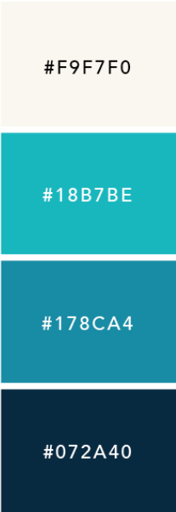
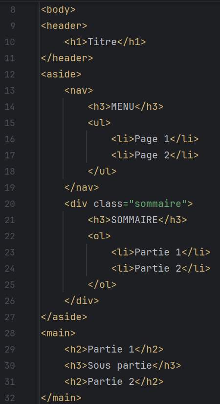
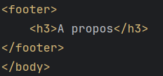
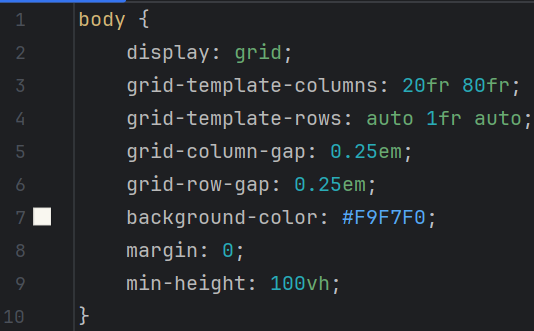
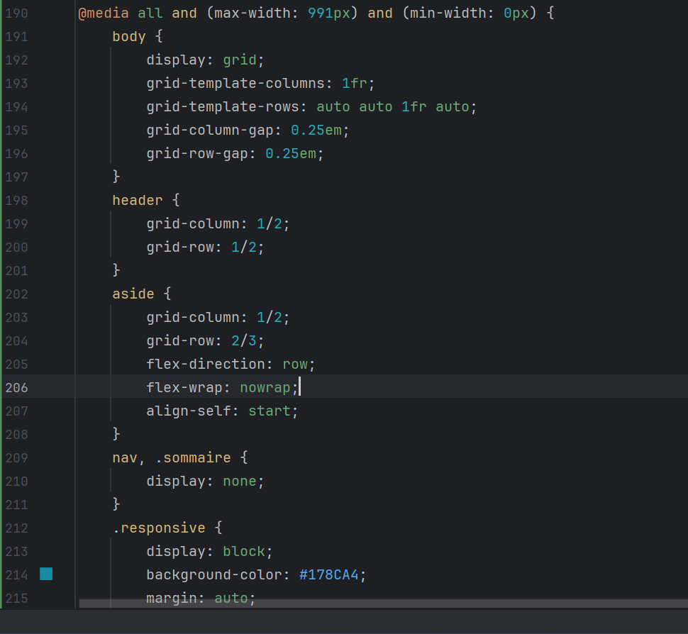

Contexte
Pour cette dernière, il fallait que nous résumions nos études et rapports sous forme d'un site internet accessible pour tous et "responsive". Pour ce faire, nous avons divisé cette mission en plusieurs parties que voici :
- Prototype et reflexion
- Construction de l'agencement
- Rédaction du contenu
- Elaboration du responsive design
Prototype et reflexion
Tout d'abord, nous avons commencé par prototyper ce à quoi devait ressembler le site.
On a commencé par choisir une palette de couleurs que voici :

On a ensuite décidé de comment serait organisé/structuré notre site. Un header tout en haut (toute la ligne), un main (80% de la ligne environ) et un aside (20% de la ligne environ) et enfin un footer (toute la ligne).
Agencement du site en CSS et HTML
On a ensuite commencé par créer une page "type" en HTML avec les éléments sémantiques. Soit un Header, un aside constitué du nav et du sommaire, un main constitué de plusieurs articles pour chaque partie du rapport et un footer.
Concernant, les titres sur les pages, le header sera un titre h1 tandis que le aside et footer seront des titres h3. Le reste de la page sera constitué de titres h2, h3 et h4 (voir image ci-dessous).


On a ensuite créer la grid du document web en CSS avec le display: grid;.
Nous avons donc décidé selon le prototype de diviser le document en 2 colonnes et 3 lignes (voir image ci-dessous).

Rédaction du contenu
Nous avons ensuite résumé nos rapports et rédigé nos rapports en HTML de façon la plus organisée possible avec des listes, tableaux, images et paragraphes.
Mise en place d'un responsive design
Nous avons fini par mettre en place un design responsive pour notre document web afin que des personnes sur tablettes, téléphones ou des plus petits écrans puissent lire et intéragir avec le document sans gêne. Voici un extrait du code CSS :
